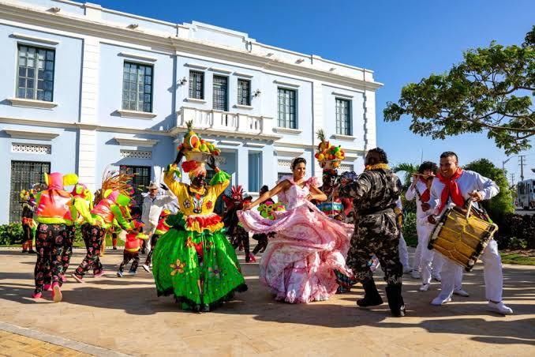
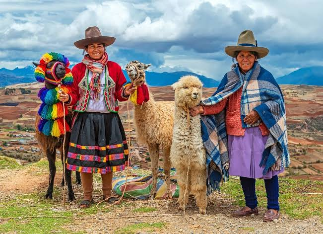
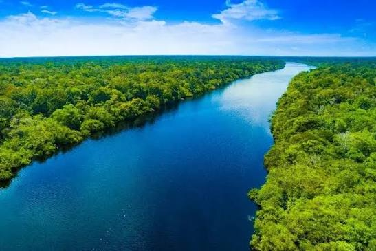

La Región Caribe se encuentra al norte de Colombia y se caracteriza por su clima cálido, playas y riqueza cultural.
Clima
Predominantemente cálido.
Actividad turística
Playas, cultura y turismo histórico.

La Región Andina está atravesada por las principales cadenas montañosas de Colombia.
En esta región se encuentran algunas de las principales ciudades del país.
Clima
Varía de acuerdo con la altitud.
Actividad turística
Cultura, naturaleza y turismo urbano.

La Región Amazónica se localiza al sur del país y posee una gran biodiversidad.
Clima
Cálido y húmedo.
Actividad turística
Naturaleza, aventura y ecoturismo.